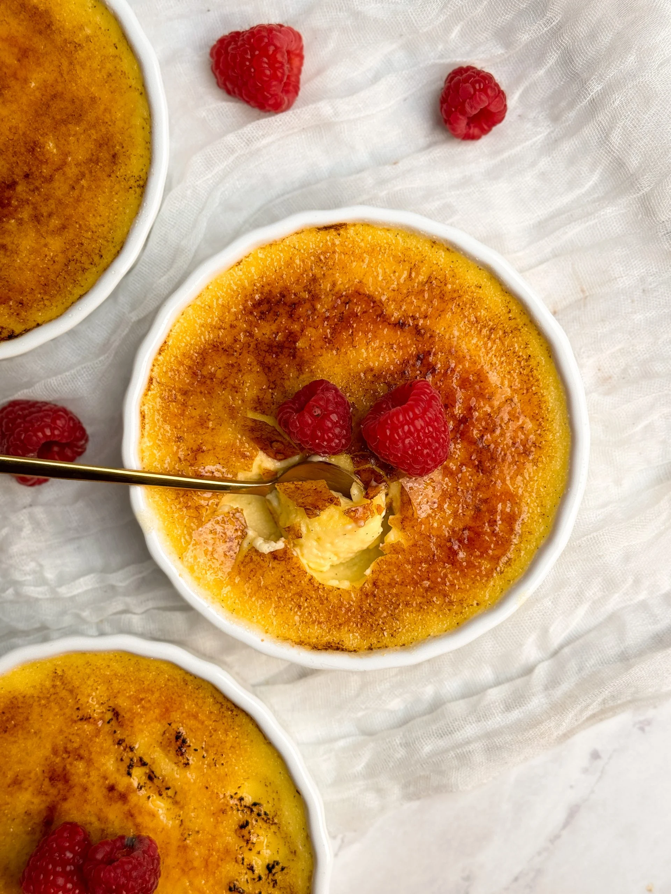
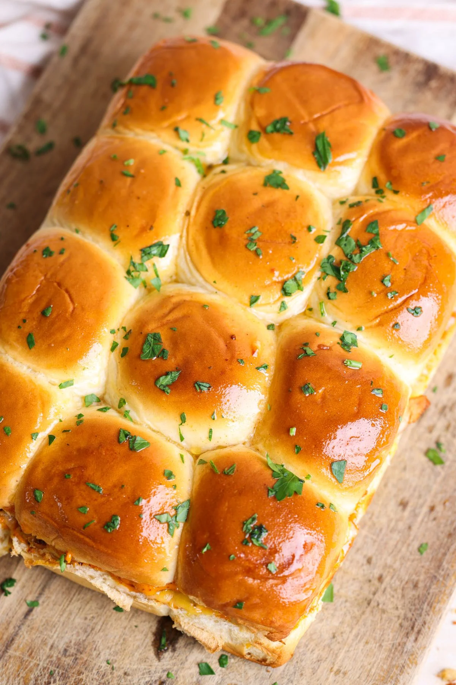

3 Easy Recipies to Follow
The Perfect Creme Brulee
Jump to Recipe
This is the Perfect Vanilla Creme Brulee Recipe: silky, creamy,
and luscious with a thin and crispy caramel coating worthy of a fancy
restaurant's dessert menu. And although Creme Brulee is often touted as
a posh dessert sold, you'd be surprised to learn that it is actually
extremely simple! You need just 5 ingredients including salt and
vanilla, and 10 minutes of active work.


What you'll Need:
- 1.5 cups heavy cream (360g)
- 4 large egg yolks
- ¼ cup granulated sugar (55g) + more for the crispy coating
- Pinch of salt
- ½ vanilla bean pod, or 1 tsp vanilla bean paste
Instructions
-
Pre-heat oven to 300F (conventional), and put a few cups of
water to boil. This will be used for the water bath
-
Add the heavy cream and vanilla to a saucepan and stir. Place on
the stove on low heat until the cream starts to simmer
(not a full boil)
-
Add egg yolks, sugar and salt to a bowl and whisk until the
yolks break down
-
Once the cream is simmering, slowly pour about a fourth of it
into the egg yolk mixture while continuing to whisk. This will
temper the eggs so they don't curdle. Then add the remaining
cream and whisk gently until combined. Don't overmix or whisk
too aggressively as that will add too many air bubbles in the
mixture
-
Pass the custard through a fine mesh sieve to remove any lumps
-
Divide the mixture equally between 3 8oz Creme Brulee ramekins,
filling almost to the top
-
Place the ramekins inside a larger baking tray, and carefully
add boiling water to the tray, avoiding the ramekins. I fill
enough water so it goes halfway up the height of the ramekins
-
Carefully lift the tray with the water and ramekins and
place inside the oven
-
Bake for ~30-40 minutes, until the creme brulees are set around
the edges but still have a wobble in the middle when gently
shaken
-
Immediately transfer the ramekins to the fridge, and cool
overnight (or at least for 4 hours)
-
The next day, sprinkle a thin layer of granulated sugar on each
ramekin, and use a blowtorch to caramelize the sugar. It should
become a deep brown color. I find it best to hold the blowtorch
at a 45 degree angle
- Serve & enjoy!
Hot Honey Chipotle Chicken Sliders
Irresistible sliders made with juicy and spicy chipotle chicken,
honey chipotle mayo and lots of cheese in Hawaiian rolls!

Ingredients
Hot Honey Chipotle Chicken:
- ¾ pound boneless chicken tenders (about 350g)
- 1 tbsp olive oil + more for cooking
- ½ tbsp honey
- 3 tbsp adobo sauce
- 1 tsp salt (or to taste)
- ½ tsp garlic powder
- ½ tsp chili powder
- ½ tsp paprika
- ½ tsp chili flakes
- ¼ tsp pepper
- ½ tsp oregano
- ¼ tsp coriander
- ¼ tsp cumin
Honey Chipotle Mayo:
- 2 chipotle peppers
- ¾ cups mayonnaise
- ½ tsp salt
- 1 tsp garlic powder
- ½ tsp pepper
- ½ tbsp lemon juice
- 2 tbsp honey
Hot Honey Butter:
- 2 tbsp salted butter, melted
- 2 tsp honey
- ½ tsp paprika
Assembly:
- 16 King's Hawaiian Original Hawaiian Sweet Rolls
- 1 to 1 ½ cups of shredded cheese based on your preference
- Chopped fresh parsley to garnish